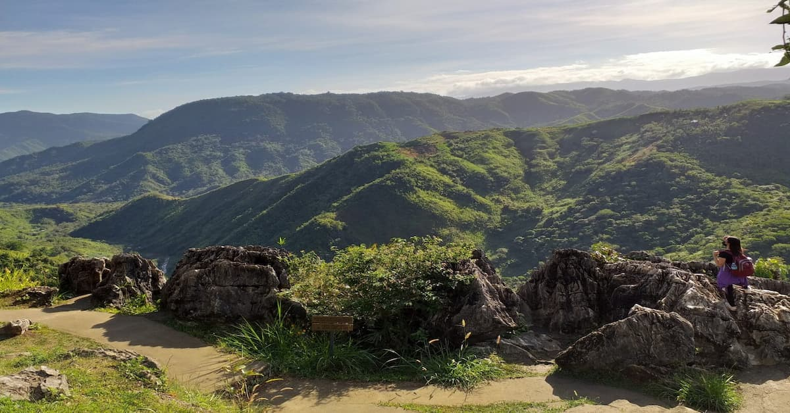
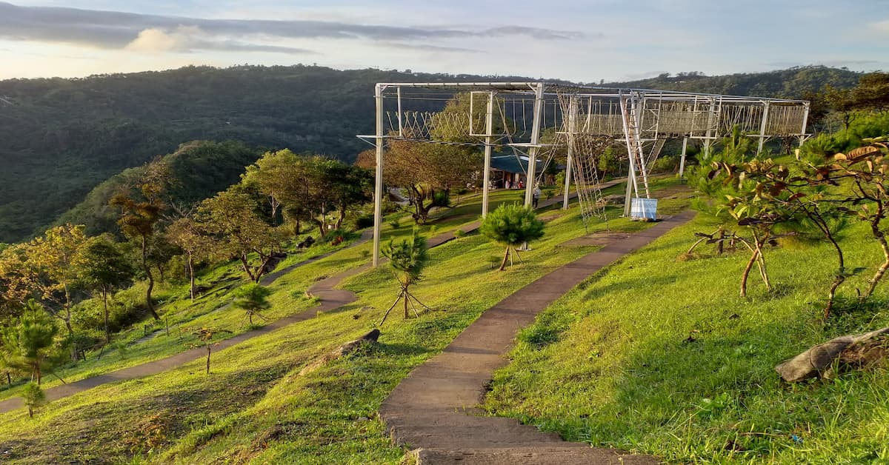
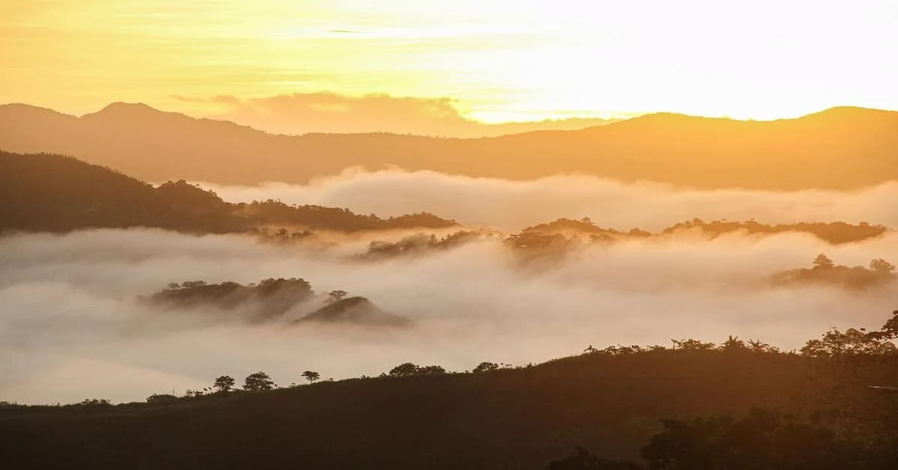

Best for: Families, Casual Travelers, and Overnight Campers.
Vibe: Relaxing, Dreamy, and Instagrammable.


Treasure Mountain
Experience the Magic of the Clouds Without the Strenuous Climb.
Treasure Mountain has redefined mountain tourism by making the majestic "sea of clouds" accessible to everyone. Located in the highlands of Tanay, this private peak offers a breathtaking escape for those who want the view without the hike.


